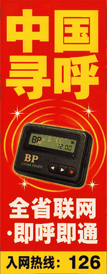
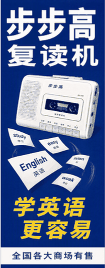

点歌将在《夜空下的点歌台》（每晚 20:00 – 22:00）播出。请留下你的称呼、想点的歌和想对 TA 说的话。
你的称呼：
想点的歌：
想说的话：
点歌规则说明：阅读须知
经本人同意，摘选部分已播出的点歌留言：
「出租车司机王师傅点一首《夜来香》，送给每一位夜班同行：后半夜跑车，别随便让人在路边搭话，也别随便换台。」
「高三的小林点一首《月亮代表我的心》，送给复读班同桌：谢谢你每天借我半块橡皮。再有四十几天，我们都别熬了。」
「一位不愿署名的听众点一首《难忘今宵》，没有留言，只在点歌单背面写了一行字：『她不唱歌，她只念信。你们谁去劝她唱一首吧，就唱这首，唱完就该散场了。』——导播注：此条点歌单投递时间为凌晨三点十七分，投入点为台门口信箱。信箱监控显示，该时段无人经过。」